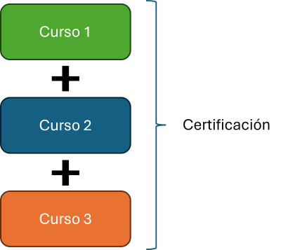

Es un conjunto de cursos organizado en torno a una temática específica. Están integrados en los planes de estudio de pregrado, y su propósito es desarrollar competencias de carácter profesional en áreas disciplinares que complementan la formación académica del estudiantado. Consideran el abordaje de competencias sello de la universidad, fortaleciendo tanto habilidades transversales como profesionales.
¿Qué es una certificación?
Certificacions en alianza
Certificaciones Microsoft

Las certificaciones Microsoft se realizan a través de la plataforma Microsoft Learn y se rinden como exámenen en la universidad a través de u centro Certiport.
Design Thinking
La certificación en Design Thinking se realiza a través de la D-School de la Universidad Mayor.